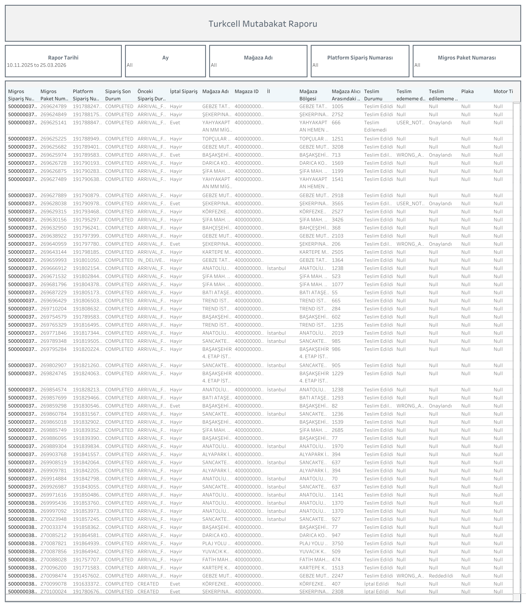

Canlı Rapora Erişin
Güncel Turkcell mutabakat verilerini Tableau üzerinde interaktif olarak görüntüleyin.
Dashboard Hakkında
Ne Gösterir?
Turkcell Mutabakat Raporu, Migros sipariş numaraları ile platform sipariş numaralarını eşleştirerek Turkcell kanalındaki teslimat süreçlerinin mutabakatını sağlar. Teslim durumu, iade ve onay bilgileri satır bazında incelenir.
- Sipariş Eşleştirme: Migros Sipariş No, Migros Paket No ve Platform Sipariş No karşılaştırması
- Sipariş Durumu: COMPLETED, CREATED ve diğer sipariş statüleri
- Önceki Sipariş Durumu: ARRIVAL_FAILURE, IN_DELIVERY gibi önceki durum bilgisi
- İptal Bilgisi: İptal olan siparişlerin ayrımı
- Mağaza ve Bölge: Mağaza adı, mağaza ID, il ve mağaza bölgesi
- Teslim Detayları: Teslim durumu, teslim edememe nedeni ve onay bilgisi
- Mağaza Alıcısı Arasındaki Mesafe: Teslimat mesafe bilgisi (metre)
- Filtreler: Rapor tarihi aralığı, ay, mağaza adı, platform sipariş numarası ve Migros paket numarası
Dashboard Önizleme

Turkcell Mutabakat Raporu — Tableau